Granducato di Toscana
Stato Pontificio
Granducato di Toscana
Stato Pontificio
 Ducato di Parma
Prima Repubblica Romana
Ducato di Parma
Prima Repubblica Romana
 Seconda Repubblica Romana
Seconda Repubblica Romana
 Contea di Tassarolo
Contea di Tassarolo
 Principato Vescovile di Trento
Principato Vescovile di Trento
 Contea di Gorizia
Contea di Gorizia
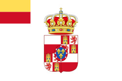
Ducato di Lucca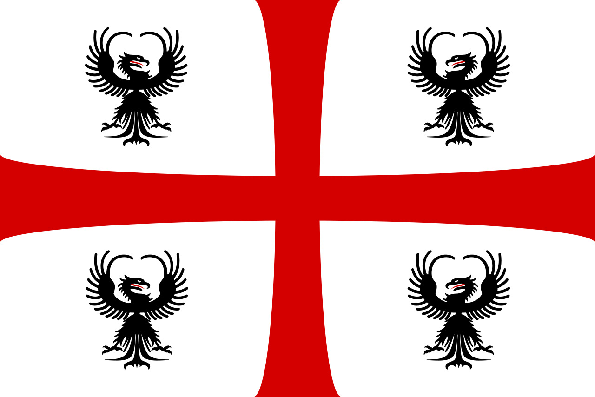
Ducato di Mantova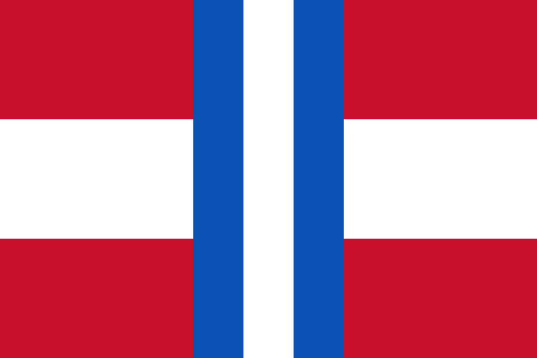
Ducato di Modena e Reggio Repubblica Ligure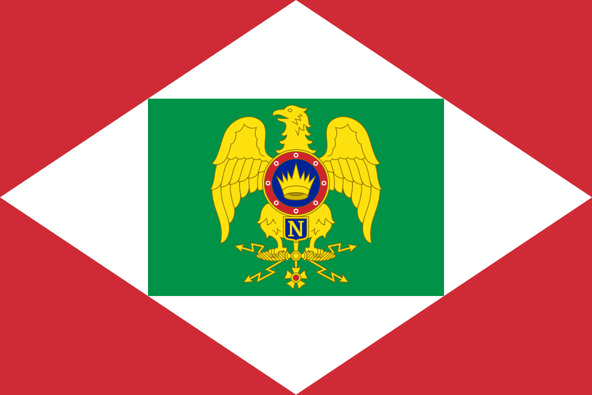
Italia Napoleonica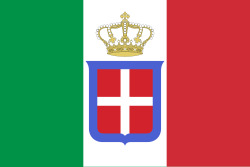
Province Unite Regno Lombardo-Veneto Regno di Sardegna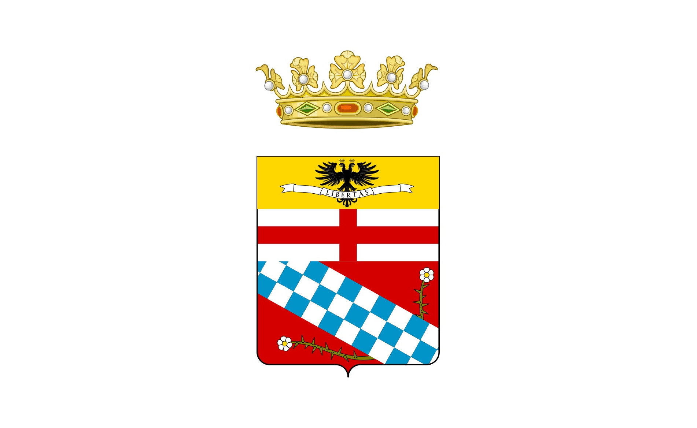
Ducato di Massa-Carrara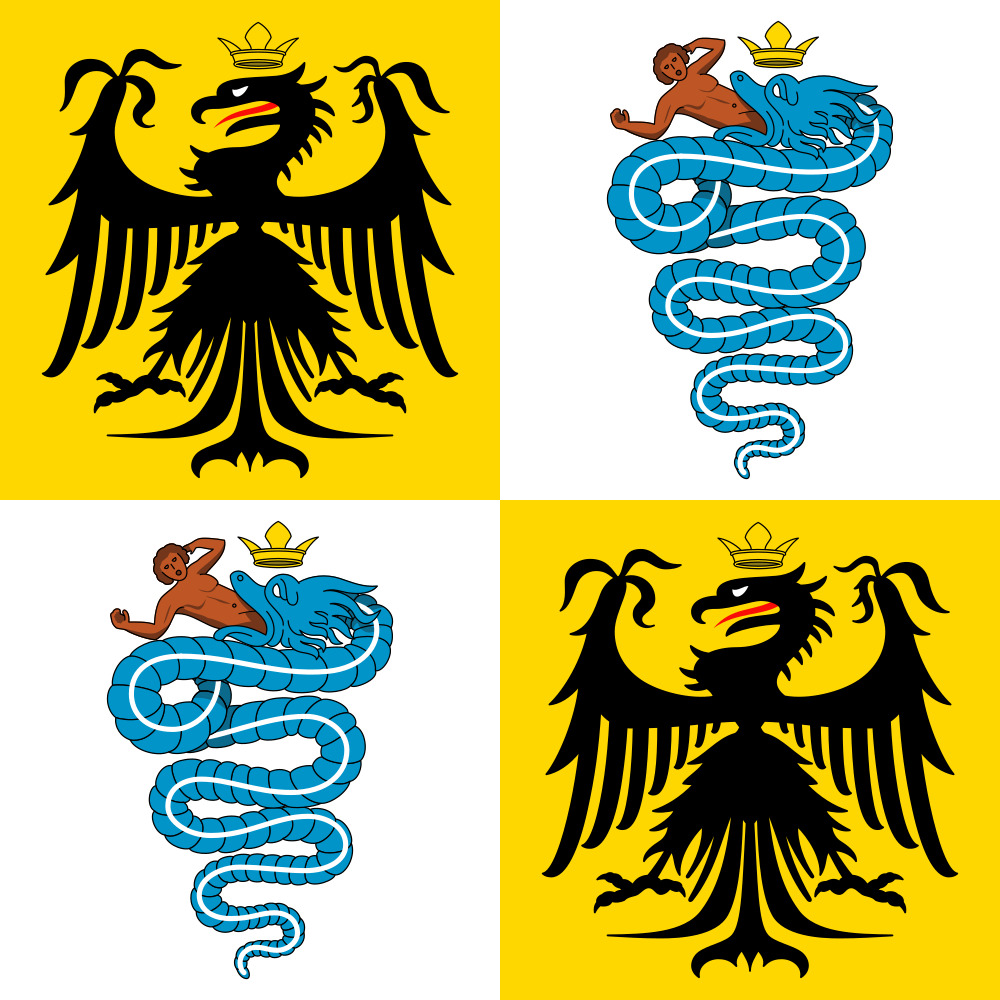
Ducato di Milano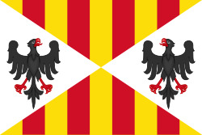
Regno di Sicilia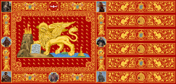
Venezia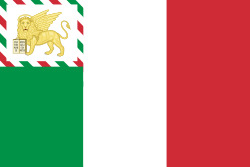
Repubblica di San Marco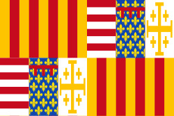
Regno di Napoli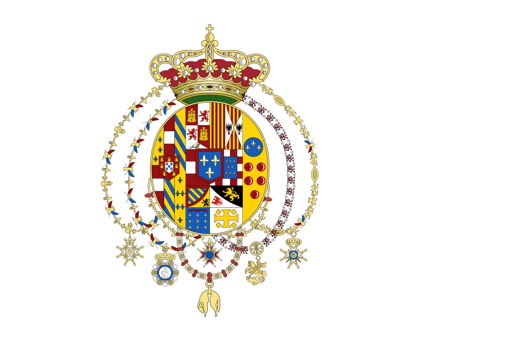
Regno delle Due Sicilie